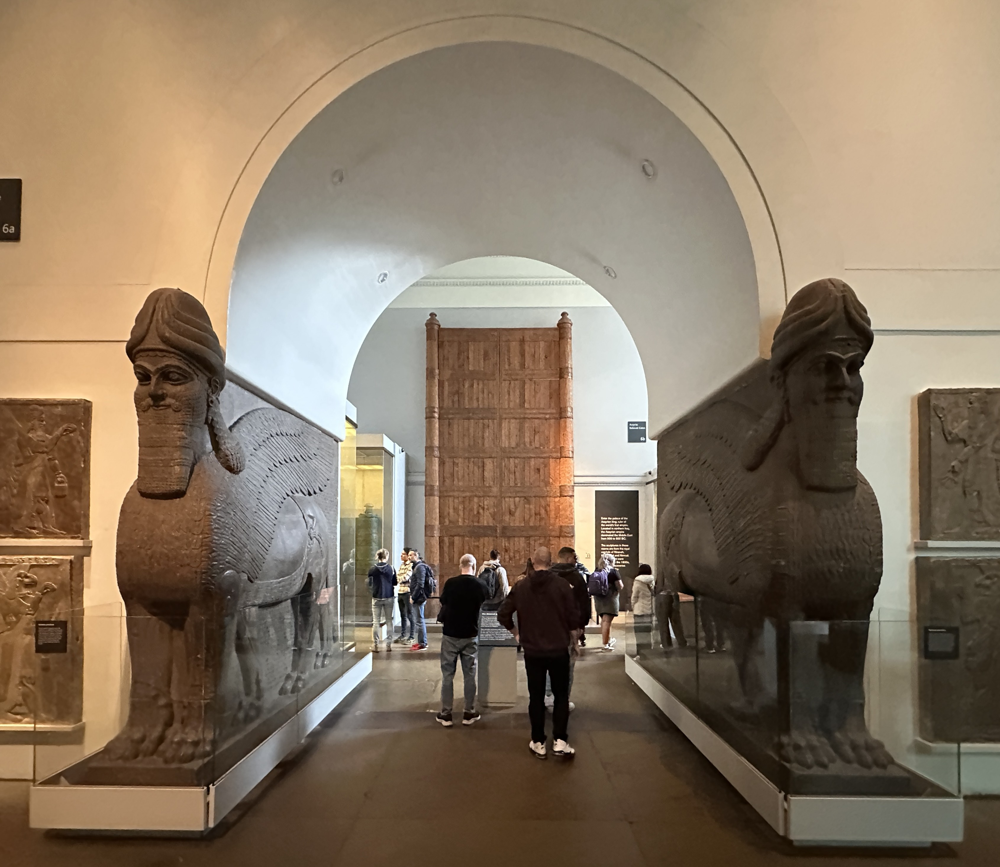

Nimrud (Calah)

- Find Name
- Nimrud (Calah)
- Description
- The Assyrian city the Bible calls Calah, known to the Assyrians as Kalhu, on the Tigris south of Mosul. Ashurnasirpal II moved the imperial capital here from Assur and built the Northwest Palace, its walls lined with carved alabaster reliefs guarded by colossal winged lamassu bulls, together with temples to Ninurta and Nabu, a ziggurat, and a walled citadel. Layard's excavations of 1845-1851 — at first mistaken for Nineveh itself — recovered the reliefs, the Black Obelisk (entry #11), and the first of the Nimrud Ivories; Max Mallowan's later work found the royal queens' tombs and the Nimrud Treasure. The city remained the chief royal residence until Sargon II moved the capital to Dur-Sharrukin in 706 BC.
- Historical Period
- Neo-Assyrian, 9th-7th centuries BC
- Evidence Class
- Direct
- Interpretations
- Scholars agree Nimrud is biblical Calah (Assyrian Kalhu); the modern name Nimrud echoes Nimrod of Genesis 10, but that is a traditional association, not an excavated fact. The Nimrud Slab of Adad-nirari III and Tablet K.3751 are separate entries; this entry is for the city, its palaces, and its citadel as a whole.
- Alternative Names
- Kalhu; Calah
- Related Places
- Related Books
- Related People
- Scripture Illuminated
- Biblical Significance
- Calah stands in Genesis 10:11-12 among the cities built after the Flood in Assyria, between Nineveh and Resen — the Bible's own map of the Assyrian heartland. Its palaces and lamassu give a face to the empire that carried Israel into exile: the same court whose annals, slabs, and tablets (entries #11, #235 and others) name the kings of Israel and Judah.
- Artifact Date
- Capital under Ashurnasirpal II (883-859 BC) to 706 BC
- Current Location
- In situ, Iraq (palace reliefs and ivories chiefly in the British Museum; site badly damaged in 2015)
- Date Discovered
- 1845-1851 (Layard; Rassam continued)
- Discovery Location
- Nimrud, 30 km south of Mosul, Iraq
- Timeline Era
- Divided Monarchy
Awaiting Review Not yet checked against scholarly sources. Treat its claims as provisional until this entry is reviewed. About verification
Last reviewed: not yet reviewed